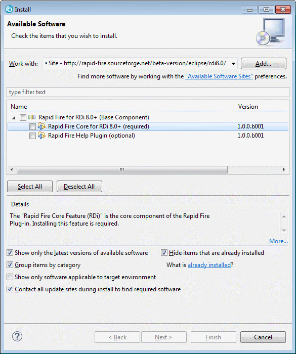

@PLUGIN_NAME@ Plug-in Update Site @IDE_PRODUCT_NAME_SHORT@
Hi, this is the @PLUGIN_NAME@ plug-in update site for @IDE_PRODUCT_NAME_LONG@.
@VERSION_INFO@
Installing the Plug-In
Using the @PLUGIN_NAME@ Update Site
From the main menu, select "Help > Install New Software..." to enter the "Install" dialog.
Drag-and-drop the URL of the update site into the "Work with:" field:

Then select the options you want to install, press the [Next] button and follow the instructions given on the following pages.
Using a Local Update Directory
Go to the @PLUGIN_NAME@ download page at SourceForge and download the zip file for your environment.
The follow these steps to create your local update site:
- Unpack the zip file to a directory of your choice. This directory will be your local update site.
- From the main menu, select "Help > Install New Software..." to enter the "Install" dialog.
- Press the [Add] button to add your directory to the list of available update sites.
- Use the [Local...] button to select your directory.
Using a Local Update Archive
Go to the @PLUGIN_NAME@ download page at SourceForge and download the zip file for your environment.
The follow these steps to create your local update site:
- Download the zip file to a directory of your choice. This zip file will be your local update archive.
- Consider removing the version number from the name of the zip file to keep the name stable for further updates.
- From the main menu, select "Help > Install New Software..." to enter the "Install" dialog.
- Press the [Add] button to add the zip file to the list of available update sites.
- Use the [Archive...] button to select the zip file.
The following terms are trademarks of the IBM Corporation in the United States or other countries or both:
| Version: @VERSION_NUMBER@ - Copyright: @YEAR@, @PLUGIN_NAME@ project team | Updated: @TODAY@ |